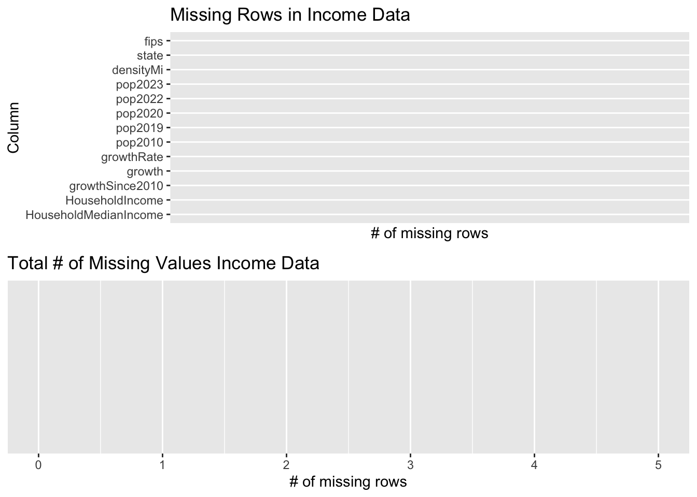
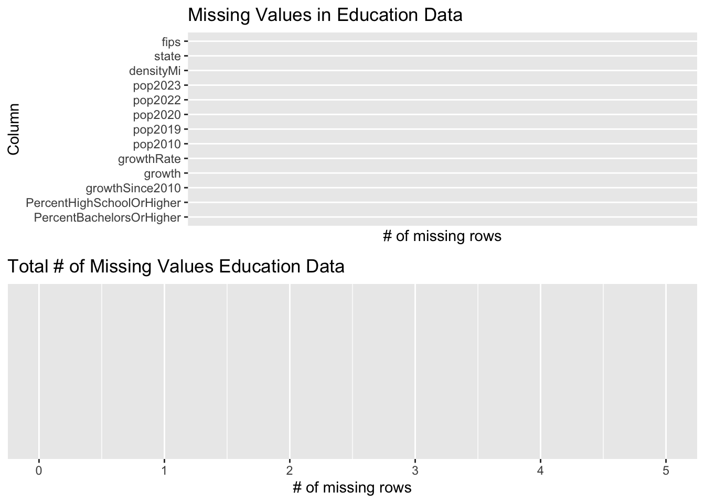
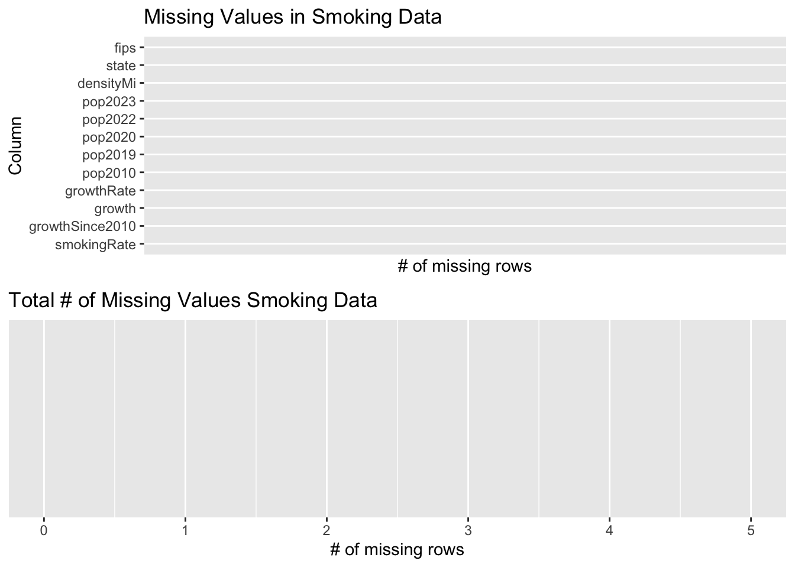

Chapter 3 Data
3.1 Sources
In this project, we are using four datasets: Educational Attainment by US State, Average Income by US State, [Average] Smoking Rates by US State, and Cancer Rates by US State. All four datasets are collected from World Population Review, but collected via separate links. All four datasets are available to download as CSV files.
We chose to download these datasets mainly because they come from the same website, and is therefore very convenient to amalgamate together for analysis with very little preprocessing. This also allows modular design, as we can associate each dataset as an indicator to study.
However, there is a major limitation to using these datasets in terms of originality of sources. All four datasets come from World Population Review, which is a third-party website that posts data from primary sources, rather than from original sources themselves. Moreoever, while the actual year the datasets were collected may be slightly different, World Population Review makes sure that the latest data is scraped from its corresponding primary sources, and there is not much difference when we analyze data within the same time frame.
This project is meant to be used as a personal project, rather than any class or industry project that requires that all data collected be original.
3.2 Missing value analysis
We first analyze whether there are any missing values in each of the datasets. We see that there are no missing data in either of the four datasets.
Income data:

Education data: 
Smoking data: 
Cancer data: 
3.3 Cleaning / transformation
We amalgamate the four datasets together, joining on the state column.
For our analysis, we use the state column, the densityMicolumn, the HouseholdIncome column from the Average Income data, the PercentHighSchoolOrHigher and PercentBachelorsOrHigher columns from the Education Attainment data, the smokingRate column from the Smoking Rates data, and the ageAdjustedRate column from the Cancer Rates data.
The ageAdjustedRate, smokingRate, HouseholdIncome, and densityMi columns are renamed to cancerCasesPer100K, smokingPercentage, HouseholdAverageIncome, and popDensity for clarity.
Population indicators such as pop2023, pop2022, pop2020, pop2019, pop2010, growthRate, growth, and growthSince2010, which are present in all four datasets, are irrelevant and omitted from our analysis. The absolute populations are not normalized, and the population growth metrics are irrelevant for this analysis.
We also removed District of Columbia since it is not an official state.